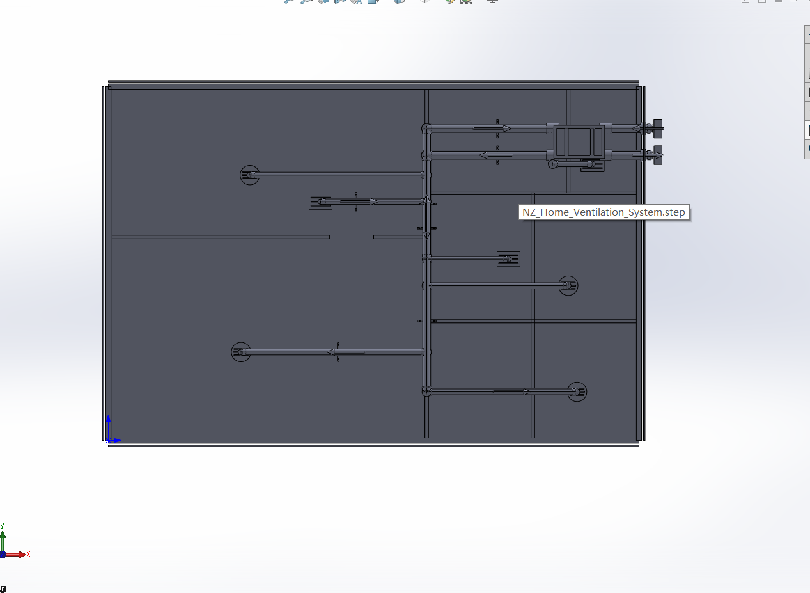
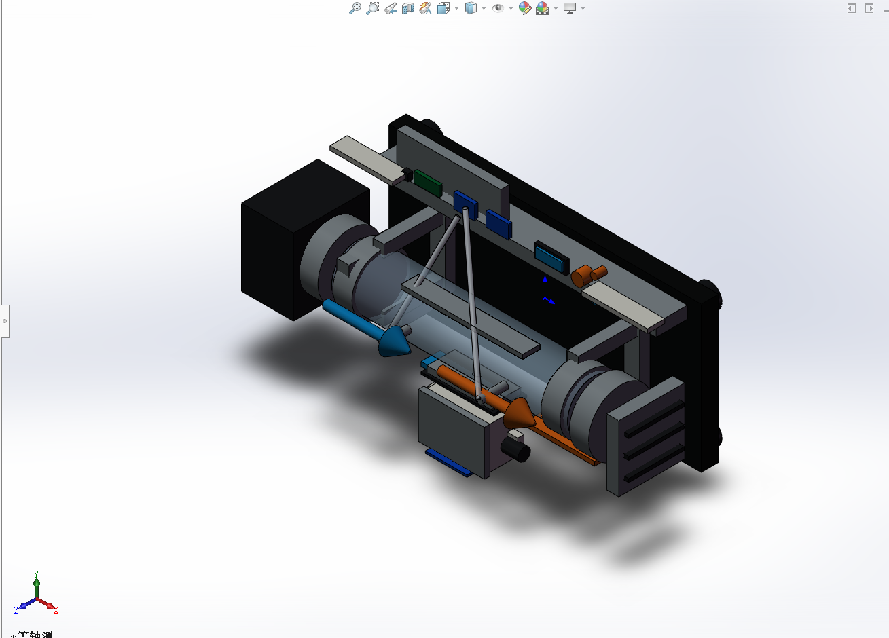
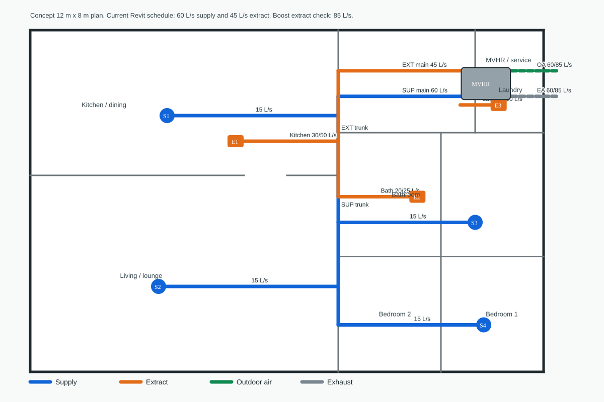
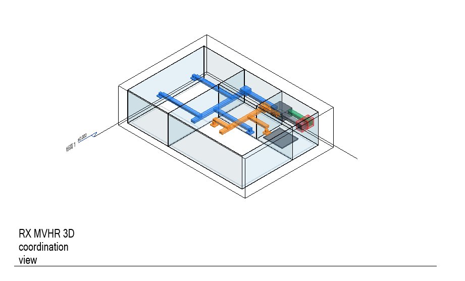
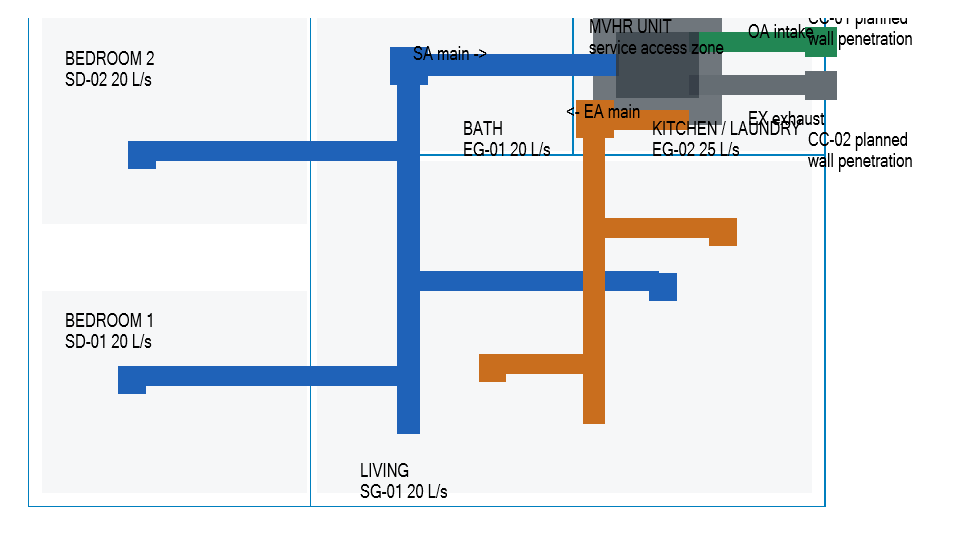
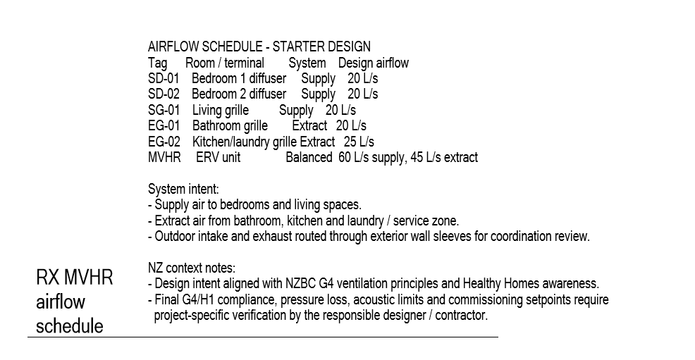
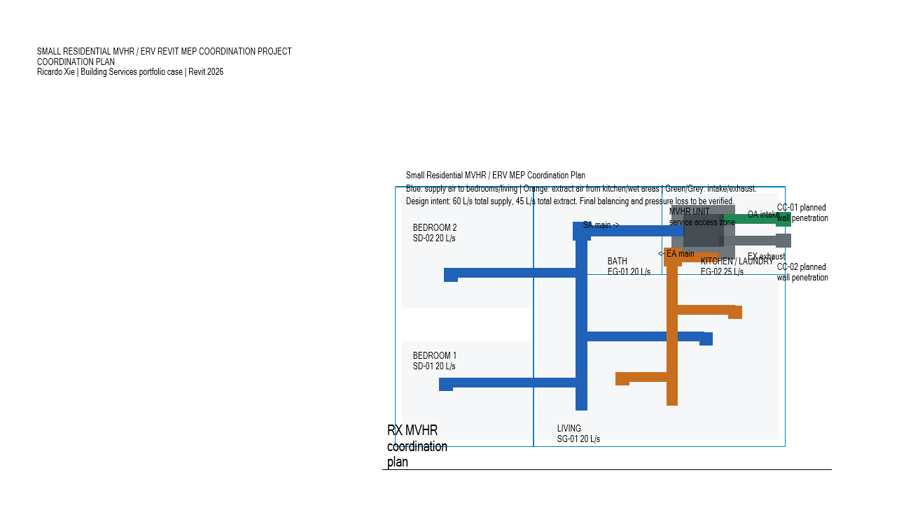
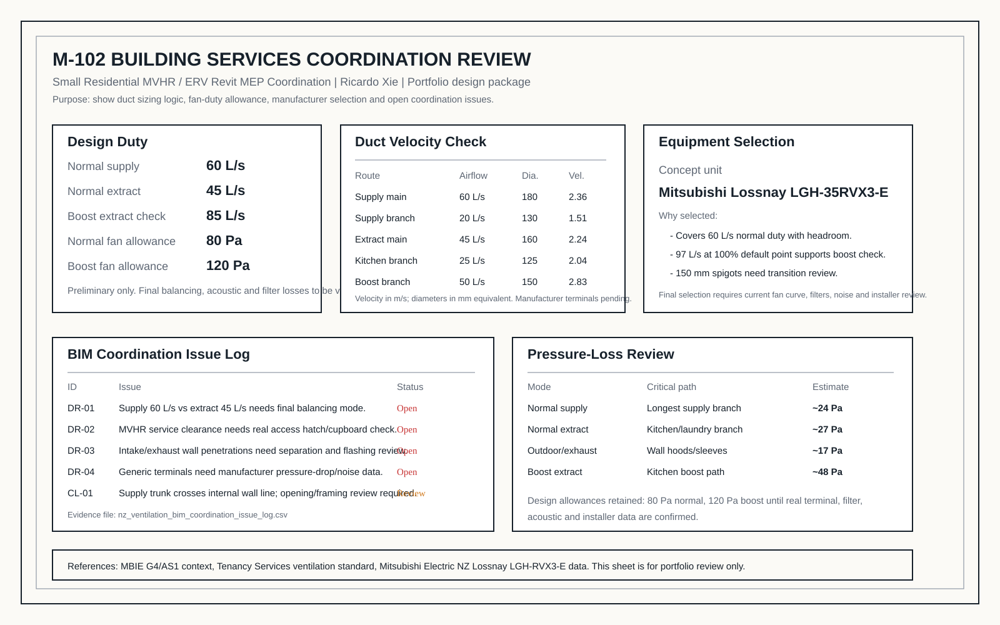
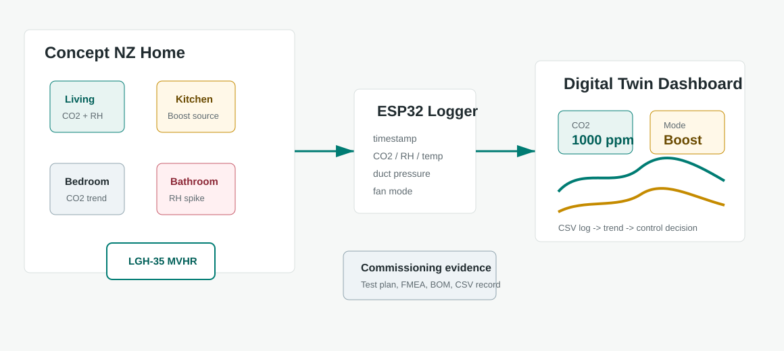
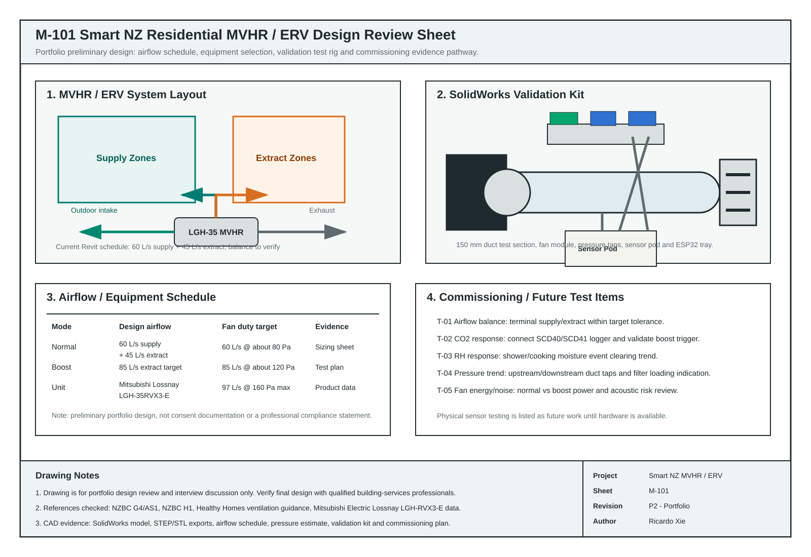

Main NZ building services and validation project
Smart NZ Residential MVHR / ERV Ventilation System
A self-directed New Zealand residential ventilation case study that connects CAD layout, local building-services context, airflow scheduling, duct velocity, pressure-loss estimation, equipment selection, sensor validation workflow and a lightweight digital-twin dashboard.
Engineering Snapshot
Built the layout, airflow schedule, pressure estimate, equipment selection and commissioning plan.
Revit 2026 model, coordination plan, 3D view, airflow schedule, review notes, issue log and SolidWorks/AutoCAD exports.
Generated system layout, native Revit MEP coordination model, STEP/STL exports and component lists.
Preliminary Revit schedule plus pressure-loss review; final balancing remains a commissioning item.
Used code context as design guidance, not as a professional compliance certificate.
Best opened by consulting and facilities teams looking for drawing and calculation discipline.



2D Ventilation Plan

Native Revit MEP Coordination Model
I rebuilt the ventilation case in Revit 2026 as a small residential MEP coordination model. The package now includes a one-level house layout, MVHR equipment, colour-coded supply and extract duct routes, outdoor intake/exhaust penetrations, diffusers/grilles, a 3D coordination view, an airflow schedule, five drawing-review comments and a simple clash-check note.




What I Added
- Native Revit 2026 RVT file with separate sheets: RX-MVHR-001 plan, RX-MVHR-002 3D view and RX-MVHR-003 airflow/review notes.
- Mechanical system naming for supply air, extract air, outdoor intake and exhaust air routes.
- MVHR unit, duct routes, diffusers/grilles and wall-penetration markers shown in plan and 3D.
- Airflow schedule with 20 L/s supply terminals, 20-25 L/s extract terminals and an explicit balancing-to-be-verified note.
- Five drawing-review comments covering balancing, access clearance, final diffuser selection, pressure loss and clash/penetration coordination.
{kind=link}
{kind=link}
Building Services Coordination Review
I added a follow-on review package around the Revit model: duct velocity checks, pressure-loss summary, preliminary MVHR equipment selection and a BIM coordination issue log. This is the part that makes the project closer to how a small HVAC/MEP task would be reviewed in practice.

New Review Deliverables
- M-102 review sheet summarising design duty, duct velocity, pressure-loss risk and equipment selection.
- Duct sizing and pressure-loss summary with normal/boost duty and review actions.
- BIM coordination issue log separating design-review items from clash/penetration checks.
- Updated Mitsubishi Lossnay LGH-35RVX3-E selection note with explicit final-review limits.
- Building-services cover letter template using this project as the main evidence.
{kind=link}
Sensor Validation and Digital Twin
The next upgrade turns the model into a measurable system: CO2, humidity, temperature, airflow target and fan-power data feed a commissioning log and dashboard, so the design can be reviewed as a testable engineering workflow rather than only a drawing.

Interactive Control Prototype
Move through sample commissioning events and adjust thresholds to see how the system changes between normal, boost and recovery states.
Sample event
-
-
SolidWorks Validation Kit
I also modelled a SolidWorks validation kit so the sensor and commissioning workflow has a physical mechanical context: a 150 mm test duct, sensor pod, pressure taps, silicone tubes, ESP32 electronics tray, fan module, flow straightener and outlet grille.
What This Adds
- Shows how the CO2/RH sensor package could be mechanically mounted and serviced.
- Adds upstream/downstream pressure taps connected to a differential-pressure sensor module.
- Links the digital dashboard to physical data sources: fan mode, airflow target, pressure, CO2 and humidity.
- Gives hardware/product employers a concrete test-rig and packaging example, not only an HVAC drawing.
Engineering Review Pack
I added a drawing-style review sheet and supporting engineering notes so the project can be discussed like a small professional package: references, fan duty, energy sense check, acoustic risk, manufacturing plan, coordination review, future physical testing and evidence-gap tracking.

Added Engineering Evidence
- M-101 style design review sheet with system layout, airflow schedule, validation kit and future test items.
- NZ reference matrix mapping G4, G4/AS1, H1, Healthy Homes and manufacturer data to project evidence.
- Fan curve, energy and noise sense check for the LGH-35 preliminary selection.
- M-102 coordination review sheet with duct sizing, pressure-loss summary and BIM issue log.
- Manufacturing package for the SolidWorks validation kit: BOM, cost estimate, assembly sequence and safety notes.
- Future physical test-item list covering CO2, RH, pressure and power checks for the next hardware step.
{kind=link}
Engineering Capability Shown
- Translated a residential MVHR / ERV design brief into routed supply, extract, outdoor-intake and exhaust systems.
- Connected the CAD model to New Zealand building-services context: NZBC G4 ventilation, H1 energy efficiency and Healthy Homes point checks.
- Documented the current Revit coordination schedule as 60 L/s supply and 45 L/s preliminary extract, with final balancing tracked as a design-review item.
- Separated boost / extractor checks from normal heat-recovery operation, with an 85 L/s boost extract target.
- Estimated duct velocities and path pressure losses, then set preliminary fan-duty targets of about 80 Pa normal and 120 Pa boost.
- Added a manufacturer-based equipment check and selected Mitsubishi Electric Lossnay LGH-35RVX3-E as the preliminary MVHR unit size.
- Raised a BIM coordination issue log covering balancing, service access, wall penetrations, terminal data, controls and clash-review items.
- Generated a 2D DXF ventilation plan so the system can be reviewed in AutoCAD as well as SolidWorks.
- Built a native Revit 2026 MEP coordination model with three portfolio sheets, plan/3D views, system naming, schedule evidence and coordination checks.
- Automated the visual system model with C# SolidWorks API, producing 151 named features plus STEP, STL, PNG and component-list exports.
- Added stakeholder requirements, trade study and FMEA so the project shows systems-engineering judgement.
- Built a sensor-validation and commissioning plan using CO2, humidity, airflow, fan power and control-state data.
- Created a Python Streamlit dashboard prototype and a web-based interactive control demonstrator.
- Added a sensor-pod mounting DXF and BOM to show mechanical hardware/test-rig thinking.
- Modelled a SolidWorks validation kit with test duct, sensor pod, pressure taps, electronics tray, fan module and flow straightener.
- Packaged the work into a drawing-style review sheet, NZ reference matrix, fan/energy/noise note and manufacturing package.
Preliminary Sizing Results
Current Revit Coordination Schedule
- Supply: bedroom 1, bedroom 2 and living terminals at 20 L/s each, total 60 L/s.
- Extract: bathroom 20 L/s and kitchen/laundry 25 L/s, total 45 L/s.
- Design review item: final MVHR balancing strategy still needs supplier data, damper settings and commissioning measurement.
- Nominal whole-dwelling sense check: 216 m3/h over about 230 m3, or 0.94 ACH.
- Typical velocities: 2.36 m/s in 180 mm main ducts and 1.13 m/s in 130 mm supply branches.
Boost and Fan Duty
- Boost extract check: kitchen 50 L/s, bathroom 25 L/s and laundry 10 L/s.
- Highest normal path estimate: kitchen extract path at about 34 Pa before equipment allowances.
- Highest boost path estimate: kitchen boost path at about 72 Pa before equipment allowances.
- Portfolio fan targets: 60 L/s supply design at about 80 Pa allowance, 85 L/s boost extract check at about 120 Pa.
- Preliminary unit: LGH-35RVX3-E, selected because its 97 L/s at 160 Pa maximum point covers the boost target with headroom.
New Zealand Local Context
References Used
- NZ Building Code G4 - Ventilation: requires ventilation to occupied spaces and covers outdoor air and extract ventilation.
- NZ Building Code H1 - Energy Efficiency: relevant because ventilation, uncontrolled airflow and HVAC systems affect energy performance.
- Healthy Homes ventilation standard: used as a practical residential reference for openable-area and kitchen/bathroom extract checks.
Software Direction
- Excel / Google Sheets: airflow schedule, duct sizing, pressure-loss estimate and fan selection note.
- AutoCAD: 2D ventilation plan, duct route communication and future drawing-sheet development.
- Revit MEP: native RVT model with plan/3D/schedule sheets, system naming, airflow schedule and coordination notes.
- SolidWorks: current visual 3D system model and mechanical layout demonstration.
- EnergyPlus / IES VE / Fluent / CFX: later-stage energy or airflow simulation after basic sizing is complete.